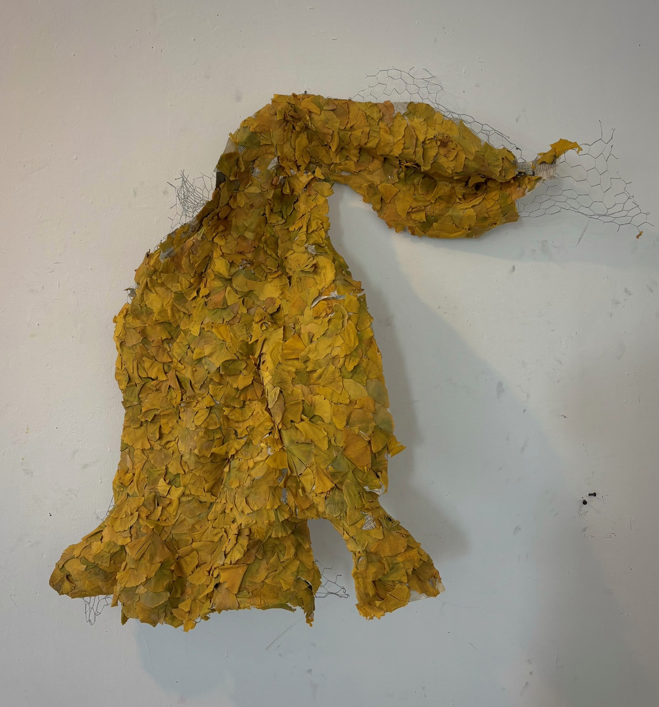

All artwork
Sculptures

Suspended gold form
A textured golden form folds and hangs against a pale wall.
Provisional title · View 1 of 701 / 14

A textured golden form folds and hangs against a pale wall.
Provisional title · View 1 of 7